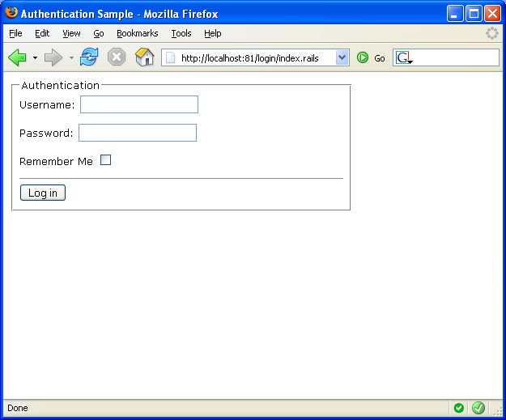
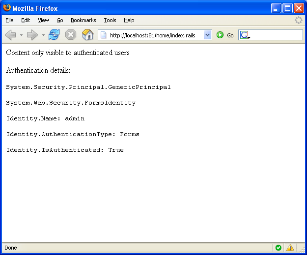
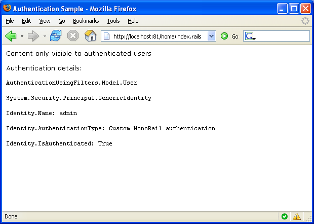

Authentication and Authorization
MonoRail does not provide a standard way to accomplish authentication
nor authorization. This is intentional as MonoRail runs on
top of the Asp.Net infrastructure
which provides standard way to handle both, like the
FormsAuthentication and the
That being said, you can also use Filters to implement authentication if you want. All you have to do is associate an authentication filter with the controllers that can only be accessed by authenticated users.
Using FormsAuthentication
When you use FormsAuthentication you leverage Asp.Net to handle the authentication, or the cookie and principal implementation or both.
If you want to use FormsAuthentication, the first thing to do is indicate which resources can only be accessed by authenticated users. Note that from Asp.Net point of view, a controller is also a resource.
To configure this, use the
<?xml version="1.0" encoding="utf-8"?> <configuration> <location path="home"> <system.web> <authorization> <deny users="?"/> </authorization> </system.web> </location> ...
With the configuration above we are saying that the controller Home cannot be reached by anonymous users.
Now that the resources are protected we can configure the FormsAuthentication support. In order to be really simple, we even manage the usernames and passwords allowed on the configuration file too:
<?xml version="1.0" encoding="utf-8"?> <configuration> ... <system.web> <authentication mode="Forms"> <forms name="auth" loginUrl="login/index.rails"> <credentials passwordFormat="Clear"> <user name="admin" password="admin" /> <user name="user" password="user" /> </credentials> </forms> </authentication> ...
The configuration defines that in the event that authentication is needed, Asp.Net should redirect the user to login/index.rails which is our LoginController, action index. There we present our login form:

The authentication code relies on the FormsAuthentication:
using System.Web.Security; using Castle.MonoRail.Framework; [Layout("default")] public class LoginController : SmartDispatcherController { public void Index() { } public void LogIn(String username, String password, bool rememberme, string ReturnUrl) { if (FormsAuthentication.Authenticate(username, password)) { CancelView(); FormsAuthentication.RedirectFromLoginPage( username, rememberme, Context.ApplicationPath); } else { // If we got here then something // is wrong with the supplied username/password Flash["error"] = "Invalid user name or password. Try again."; RedirectToAction("Index", "ReturnUrl=" + ReturnUrl); } } }
Once authenticated, we can navigate to the protected resource:

Using Filters
When using filters the options are wide. You can rely on the session, you can rely on cookies or you may want to provide an implementation of IPrincipal and supply the roles yourself to have a more fine-grained permission control.
The approach demonstrated here uses a custom implementation of IPrincipal on the User class and uses the session to persist the authentication among requests. Implementing a "remember me" feature would require a cookie. The cookie approach was not implemented here in order to keep the example as simple as possible.
Authentication control with filter is just a matter of associating an authentication filter with the controllers you do not want to be accessed by anonymous users. This only restricts access to the controller's actions. If you want to protect files, you might use a mix of filters and FormsAuthentication or implemet the Authenticate_Request event.
In our example we want to prevent access to the HomeController. We associate a BeforeAction filter with the controller:
using AuthenticationUsingFilters.Filters; using Castle.MonoRail.Framework; [Layout("default")] [Filter(ExecuteEnum.BeforeAction, typeof(AuthenticationFilter))] public class HomeController : SmartDispatcherController { public void Index() { } }
The filter implementation can do a number of things to check if the current user is authenticated. We decided to check if an existing object exists in the session. The object implements IPrincipal but this is not required. The implementation will vary depending on the requirements and how you plan to handle authorization.
using System.Collections.Specialized; using AuthenticationUsingFilters.Model; using Castle.MonoRail.Framework; public class AuthenticationFilter : IFilter { public bool Perform(ExecuteEnum exec, IRailsEngineContext context, Controller controller) { // Read previous authenticated principal from session // (could be from cookie although with more work) User user = (User) context.Session["user"]; // Sets the principal as the current user context.CurrentUser = user; // Checks if it is OK if (context.CurrentUser == null || !context.CurrentUser.Identity.IsAuthenticated) { // Not authenticated, redirect to login NameValueCollection parameters = new NameValueCollection(); parameters.Add("ReturnUrl", context.Url); controller.Redirect("login", "index", parameters); // Prevent request from continue return false; } // Everything is ok return true; } }
The LoginController will not be much different from the previous example:
using AuthenticationUsingFilters.Model; using Castle.MonoRail.Framework; [Layout("default")] public class LoginController : SmartDispatcherController { public void Index() { } public void LogIn(String username, String password, bool rememberme, string ReturnUrl) { // We should authenticate against a database table or something similar // but here, everything is ok as long as the // password and username are non-empty if (IsValid(username, password)) { CancelView(); // Ideally we would look up an user from the database // The domain model that represents the user // could implement IPrincipal or we could use an adapter User user = new User(username, new string[0]); Session["user"] = user; Redirect(ReturnUrl); } else { // If we got here then something is wrong // with the supplied username/password Flash["error"] = "Invalid user name or password. Try again."; RedirectToAction("Index", "ReturnUrl=" + ReturnUrl); } } private bool IsValid(string username, string password) { return username != null && password != null; } }
If the authentication passes we just create the User and add it to the session, allowing the filter to get it for the subsequent requests.
The User class is just a simple implementation of IPrincipal. Real applications will use an adapter or change an existing class that represents a logged-in user, or a system user to implement it as well.
public class User : IPrincipal { private string[] roles; private IIdentity identity; public User(String name, String[] roles) { identity = new GenericIdentity(name, "Custom MonoRail authentication"); this.roles = roles; } public bool IsInRole(string role) { return Array.IndexOf(roles, role) >= 0; } public IIdentity Identity { get { return identity; } } }
Compared with the previous example, the data output is a little bit different:

PrincipalPermission
If you have a custom implementation of IPrincipal or even if you use the GenericPrincipal but supply the roles, you would be able to use PrincipalPermission to prevent users from invoking methods or code branches.
In addition to setting the principal implementation on the HttpRequest (which is what context.CurrentUser does) you must also set the principal on the current thread by using System.Threading.Thread.CurrentPrincipal.
The PrincipalPermission and PrincipalPermissionAttribute belong to the .Net security infrastructure and demands that the executing principal have a specific role. This can be used as the last resource to secure your application.
For example, suppose your application is clever enough to not offer buttons or links to resources/actions the users do not have access to. However, this is commonly refered to as security by obscurity, as any user that knows how to get to the resource will be able to access them. To secure the application from this kind of access you might use the PrincipalPermission. For example:
using System.Security; using Castle.MonoRail.Framework; public class OrderController : SmartDispatcherController { [PrincipalPermission(SecurityAction.Demand, Role="Administrator")] public void DeleteOrder(int orderid) { ... } }
If the current user does not have the role Administrator a SecurityException will be thrown.
The Security ViewComponent
MonoRail comes with a ViewComponent called SecurityComponent which can be used on views to prevent rendering of content based on the roles the current user (principal) has. For example:
#blockcomponent(SecurityComponent with "role=Administrator") This content can only be seen by administrators #end
TODO
For more information on ViewComponents see the Reusing UI portions (ViewComponents) document.
Found an error? Something inaccurate? Help us improve the documentation
Generated by Castle Anakia.
Sponsored by  Castle Stronghold.
Castle Stronghold.